다중 선형회귀 · 영화 흥행을 예측할 수 있을까
6차시에는 연도 하나로 기온을 예측했습니다. 오늘은 영화 데이터를 이용해 여러 변수를 사용하는 다중 선형회귀를 만듭니다. 변수를 바꿀 때 점수가 어떻게 달라지는지 관찰하고, 개봉 전 예측에 사용할 수 있는 정보인지 판단합니다.
수업 예시의 재현을 위해 데이터 버전을 고정했습니다. 기온은 2025년까지, 영화는 2025년 9월~2026년 8월 자료를 기준으로 합니다.
0. 왜 배우나
영화의 흥행을 미리 가늠하려면 여러 정보를 함께 살펴봐야 합니다. 이번 수업에서는 변수가 늘어날 때 예측이 어떻게 달라지는지 확인합니다. 특히 예측하려는 시점에 알 수 있는 정보인지가 중요합니다.
1. 개념 이해 — 직선에서 평면으로
"다중 선형 회귀(multiple linear regression)는 영향을 미치는 요인이 여러 개인 경우에 종속 변수를 설명하기 위해 여러 개의 독립 변수를 이용하는 회귀 분석이다." (128쪽)
"학습에 사용한 문제를 그대로 평가에 사용하면, 문제 해결 과정을 이해한 것인지 단지 문제를 외워서 맞힌 것인지 알 수 없어서 평가 결과를 신뢰할 수 없기 때문이다." (112쪽)
→ 독립 변수가 여러 개면 다중 회귀. 그리고 모델의 점수는 학습에 쓰지 않은 문제(테스트 데이터)로 매겨야 믿을 수 있다.
단순 선형회귀는 독립 변수 하나로 예측합니다. 다중 선형회귀는 여러 독립 변수에 각각 가중치를 곱한 뒤 더하고, 절편을 더해 예측합니다. 독립 변수가 둘이면 관계를 평면으로 나타낼 수 있습니다. 가중치는 다른 변수의 값이 같을 때 해당 변수가 1 증가하면 예측값이 얼마나 달라지는지를 나타냅니다. 변수의 단위가 다르면 가중치 크기만으로 중요도를 비교할 수 없습니다.
스크린 수와 상영 횟수가 거의 비례해 216편이 바닥면의 좁은 띠 하나 위에만 놓이고, 그 결과 스크린 수 계수가 혼자 넣을 때의 +932에서 함께 넣을 때 −4,385로 뒤집힙니다.
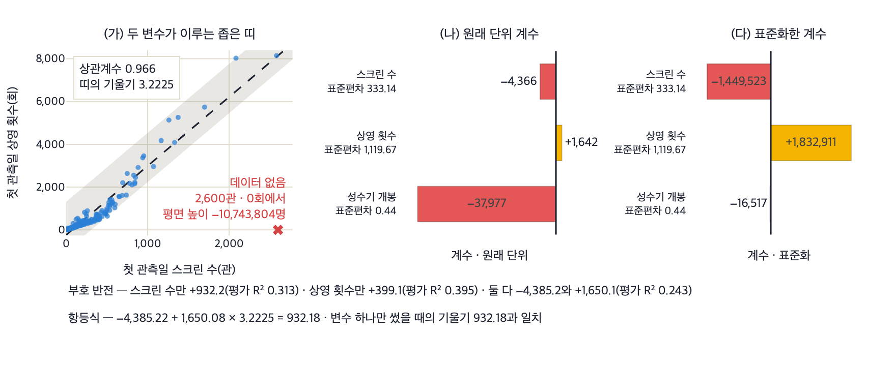
- 216편이 좁은 띠 위에만 있습니다.
- 띠 바깥에서의 평면 높이는 관측으로 뒷받침되지 않습니다.
- 원래 단위에서는 성수기 계수 −37,977이 가장 커 보이지만 성수기는 0 또는 1이고 스크린 수는 수백 단위입니다.
- 표준화하면 순서가 뒤집혀 성수기의 영향이 가장 작습니다.
- 스크린 수 계수를 상영 횟수 계수와 띠의 기울기로 되돌리면 −4,385.22 + 1,650.08 × 3.2225 = 932.18이 되어 변수 하나만 썼을 때의 기울기와 같습니다.
- 두 계수는 따로 읽을 수 없습니다.
- 참고로 시험용 66편을 떼는 시작 위치를 0번째에서 9번째까지 옮기면 스크린 수 계수는 −2,325에서 −4,459, 평가 R²는 −0.080에서 +0.447까지 움직입니다.
- 부호는 열 번 모두 같습니다.
내 앱에서 직접 실험하기 — 프롬프트
두 변수가 얼마나 겹치는 정보인지, 그리고 계수를 어떻게 읽어야 하는지 보고 싶어. 먼저 첫 관측일 스크린 수를 가로축, 첫 관측일 상영 횟수를 세로축에 둔 산점도를 그리고 점들이 거의 직선을 이루는지 보이게 해 줘. 그 직선의 기울기와 두 변수의 상관계수를 숫자로 적어 줘. 다음으로 스크린 수만 쓴 모델, 상영 횟수만 쓴 모델, 둘을 함께 쓴 모델, 여기에 성수기 개봉까지 넣은 모델 네 가지의 계수와 절편과 시험용 점수를 표로 보여 주고, 계수는 0을 가운데 두고 좌우로 뻗는 막대그래프로 그려서 부호가 바뀌는 변수가 눈에 띄게 해 줘. 마지막으로 세 변수를 평균 0 표준편차 1로 맞춘 다음 다시 학습해 얻은 계수도 같은 방식의 막대로 그려서 옆에 나란히 붙여 줘. 표준화 기준은 학습용 영화에서만 구해 시험용에도 그대로 적용해 줘. 막대마다 그 변수의 표준편차를 함께 적어 줘. 그래프는 plotly로 그려 줘. 학습용과 시험용 나누기는 앞과 똑같이 해 줘.
상영 횟수를 한 값에 고정하고 평면을 세로로 자르면 직선 하나가 나오며, 그 직선의 기울기가 곧 '다른 변수의 값이 같을 때'의 계수입니다.
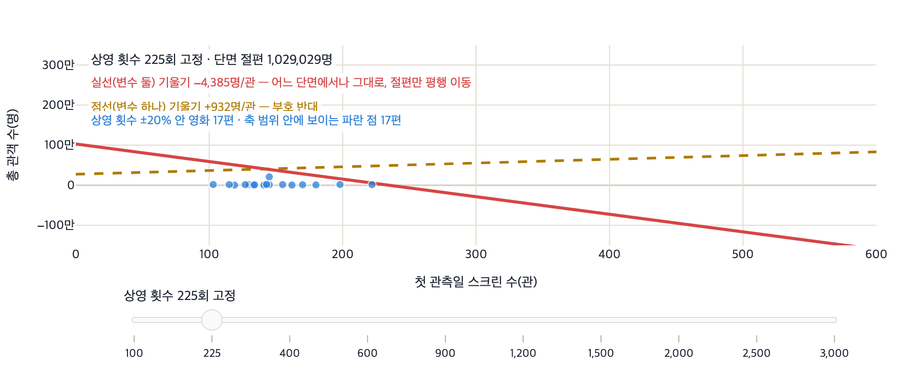
- 슬라이더를 어디에 두어도 단면 직선의 기울기는 −4,385로 같습니다.
- 절편만 올라갑니다.
- 이 −4,385는 상영 횟수가 같은 영화끼리 비교할 때의 값입니다.
- 상영 횟수를 함께 늘리는 상황에는 적용되지 않습니다.
- 점선(변수 하나)은 올라가고 실선(변수 둘)은 내려갑니다.
- 같은 데이터에서 두 부호가 모두 나옵니다.
내 앱에서 직접 실험하기 — 프롬프트
평면을 한 방향으로 잘라서 보여 줘. 첫 관측일 상영 횟수를 슬라이더로 한 값에 고정하고, 그 상태에서 스크린 수만 0관에서 600관까지 움직였을 때의 예측 관객 수를 선 그래프로 그려 줘. 슬라이더 범위는 100회부터 3,000회까지야. 같은 그래프에 스크린 수 하나만 썼을 때의 예측 직선도 다른 색 점선으로 함께 그려서 두 선을 비교하게 해 줘. 두 선의 기울기를 각각 숫자로 적고 0명 자리에 가로 기준선을 그어 줘. 슬라이더를 움직였을 때 단면 직선의 기울기가 달라지는지 그대로인지도 화면에 적어 줘. 상영 횟수가 고정한 값의 앞뒤 20퍼센트 안에 드는 영화만 점으로 함께 찍어 주고 몇 편인지도 적어 줘. 그래프는 plotly로 그려 줘. 학습용과 시험용 나누기는 앞과 똑같이 해 줘.
변수가 둘이면 예측은 직선이 아니라 평면이며, 한 영화의 예측값은 바닥면의 좌표 (스크린 수, 상영 횟수)에서 평면까지 올라간 높이입니다.
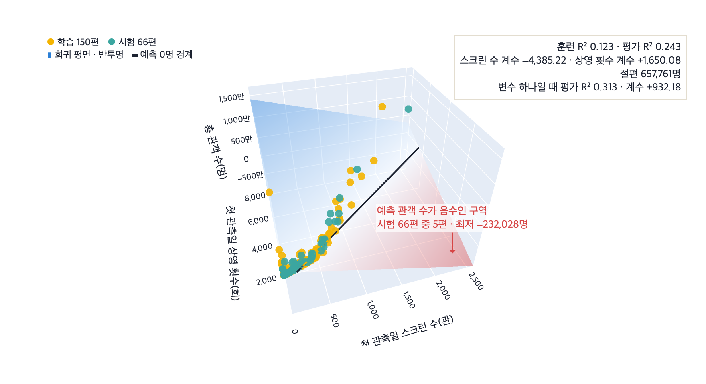
- 예측값은 바닥 좌표에서 평면까지의 높이입니다.
- 변수가 둘이면 두 좌표가 모두 있어야 높이가 정해집니다.
- 스크린 수 계수는 −4,385로 음수입니다.
- 변수 하나만 썼을 때의 +932와 부호가 반대입니다.
- 변수를 하나 더 넣었으나 평가 R²는 0.313에서 0.243으로 낮아졌고, 음수 예측이 5편 생겼습니다.
내 앱에서 직접 실험하기 — 프롬프트
이번에는 변수를 두 개 쓴 모습을 3차원으로 보여 줘. 첫 관측일 스크린 수를 x축, 첫 관측일 상영 횟수를 y축, 총 관객 수를 z축에 둔 3차원 산점도를 그려 줘. 그 위에 학습용 영화로 맞춘 회귀 평면을 반투명한 면으로 겹쳐 그려서 점이 면의 위에 있는지 아래에 있는지 보이게 해 줘. 평면의 두 계수와 절편을 화면에 숫자로 적어 줘. 예측이 0명보다 작게 나오는 구역이 면의 어디쯤인지 알아볼 수 있게 색을 나누고, 시험용 영화 가운데 음수 예측을 받은 영화가 몇 편이고 가장 낮은 예측값이 몇 명인지도 적어 줘. 변수 하나만 썼을 때의 시험 점수와 두 개를 썼을 때의 시험 점수를 나란히 보여 줘. 그래프는 plotly로 그려 줘. 학습용과 시험용 나누기는 앞과 똑같이 해 줘.
변수가 하나이면 예측은 평면 위의 직선 하나이며, 한 영화의 예측값은 그 영화의 스크린 수에서 직선까지 올라간 높이 하나로 정해집니다.
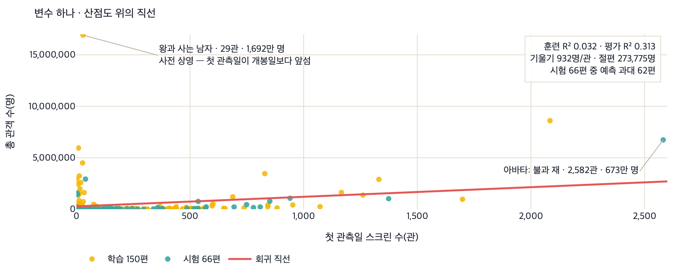
- 기울기 932는 스크린 수가 1관 늘 때 예측 관객이 932명 늘어난다는 뜻입니다.
- 점이 왼쪽 아래에 몰려 있으므로, 오른쪽 끝 구간의 직선은 여섯 편만 보고 그은 부분입니다.
- 시험용 66편 중 62편에서 예측이 실제보다 큽니다.
- 직선이 점들의 위를 지나고 있습니다.
내 앱에서 직접 실험하기 — 프롬프트
변수 하나만 쓴 모습을 그림으로 보고 싶어. 첫 관측일 스크린 수를 가로축, 총 관객 수를 세로축에 둔 산점도를 그리고 학습에 쓴 영화와 시험용 영화를 다른 색으로 구분해 줘. 학습용 영화만으로 맞춘 회귀 직선을 그 위에 함께 그려 줘. 직선의 기울기와 절편을 그래프 옆에 숫자로 적고, 학습 자료에서 잰 점수와 시험 자료에서 잰 점수를 둘 다 적어 줘. 시험용 영화 가운데 예측이 실제보다 크게 나온 편수도 함께 세어 줘. 학습용 영화 중 스크린 수가 400관보다 적은 영화와 1,000관을 넘는 영화가 각각 몇 편인지도 적어 줘. 그래프는 plotly로 그려 줘. 학습용과 시험용 나누기는 앞과 똑같이 해 줘.
점수는 처음 보는 문제로 매긴다
학습 자료에서 높은 점수를 얻었다고 새로운 영화도 잘 예측하는 것은 아닙니다. 일부 영화를 테스트 데이터로 먼저 떼어 두고, 나머지 영화로 학습한 뒤 테스트 자료에서 점수를 계산합니다. 변수 조합을 비교할 때는 같은 분할을 사용합니다.
수업용 일별 자료는 2025년 9월 1일~2026년 8월 31일의 박스오피스 상위 10위 기록입니다. 영화별 표의 216편으로 실습합니다. 개봉 전에 흥행을 예측하려면 어떤 정보가 필요한가를 생각하며 다음 구분을 확인합니다.
| 구분 | 변수 예 | 알 수 있는 시점 |
|---|---|---|
| 개봉 전 확보할 정보 | 개봉 예정일 · 장르 · 국적 · 예정 스크린 수와 상영 횟수 | 예측 시점에 실제로 확보했는지 확인합니다. |
| 개봉 후 집계 정보 | 첫 관측일의 스크린 수·상영 횟수 · 첫 주 관객 수 · 누적 관객 수 | 해당 집계가 끝난 뒤 알 수 있습니다. |
수업 자료의 한계: 파일의 first_scrn과 first_show는 개봉 전 계획값이 아니라, 일별 자료에서 각 영화가 10위권에 처음 등장한 날의 집계값과 일치합니다. 216편 중 75편은 그날이 개봉일과 다릅니다. 따라서 아래에서는 이를 기본 변수라고 부르며 교육용 비교에 사용합니다. 이 자료로 얻은 점수를 실제 개봉 전 예측 성능으로 해석해서는 안 됩니다. 실제 서비스를 만들려면 예측 시점에 확보한 자료로 다시 검증해야 합니다.
교과서 106쪽 해 보기 ①은 태풍의 진로를 예측하려면 어떤 데이터가 필요한지 묻습니다. 같은 발상을 영화로 옮겨 봅니다. "총 관객 수를 미리 맞히려면 무엇을 알아야 하는가" — 개봉 시기, 장르, 상영관 수, 전작의 성적, 출연 배우… 떠오르는 후보를 폼 Ⅲ-01a에 적고 시작합니다.
2. 실습 — 총 관객 수 예측기 (바이브 코딩)
4차시에 살펴본 영화 자료를 이용해 예측 앱을 새로 만듭니다. 먼저 기본 변수의 조합을 바꾸어 결과를 비교하고, 첫 주 관객 수를 추가한 결과를 살펴봅니다. 데이터에 실제로 들어 있는 값과 개봉 전에 사용할 수 있는 값을 구분해 기록합니다.
kobis_daily.csv— 지난 1년(365일)의 일별 박스오피스 톱10 기록 3,650행, 영화 301편kobis_movies.csv— 영화별 표. 개봉일·장르·국적이 결합되어 있고, 분석 대상은 표에 정리된 216편
앞서 살펴본 두 표를 예측의 재료로 사용합니다. 이 수업은 영화별 표에 기록된 total_audi를 예측 대상으로 삼습니다. 수집 기간과 상위 10위 기록에 제한된 자료이므로, 모든 영화의 최종 흥행 성적을 완전하게 담았다고 가정해서는 안 됩니다.
- ① 샘플 프롬프트 — 그대로 붙여 넣기
① 프롬프트
"영화 흥행 예측기" 스트림릿 앱을 만들어 줘. 파일 하나로. 박스오피스 데이터(kobis_daily.csv)와 영화 정보 표(kobis_movies.csv)를 합쳐서 영화의 총 관객 수를 예측하는 다중 회귀 모델을 만들어 줘. 어떤 변수를 쓸지는 내가 체크박스로 고를 수 있게 하고, 학습에 쓰지 않은 영화들로 잰 예측 점수와 예측이 실제와 얼마나 빗나가는지도 함께 보여 줘. 영화별 표를 영화코드 순으로 정렬한 다음, 열 편마다 앞의 세 편을 시험용으로 떼어 놓고 나머지로 학습해 줘. 수업의 기준 기간은 2025년 9월 1일부터 2026년 8월 31일까지이고, 영화별 표에 정리된 216편을 그대로 사용해 줘. 학습에 쓴 영화 편수와 점수를 잰 영화 편수, 기준 기간을 화면에 적어 줘. 시험용 영화의 실제 총 관객 수를 가로축, 예측한 총 관객 수를 세로축에 둔 산점도를 그리고, 예측이 실제와 같을 때를 나타내는 기준선도 함께 표시해 줘. 관객 수는 편차가 크니 두 축을 로그로 그려 줘. 예측이 1,000명보다 작게 나온 영화는 그래프 바닥에 붙여 표시하고 몇 편인지 적어 줘. 그래프는 plotly로 그려 줘. 두 표는 이 주소에서 불러와. 영화코드(movieCd) 열이 같은 영화를 가리켜. 두 파일 모두 인코딩은 UTF-8이야. - https://raw.githubusercontent.com/greatsong/modudata/bb860932644270ad1199f10d3e7670e30231bce4/data/kobis_daily.csv (열: 날짜(여덟 자리 숫자)·순위·영화코드·영화명·일관객·누적관객·스크린수·상영횟수) - https://raw.githubusercontent.com/greatsong/modudata/bb860932644270ad1199f10d3e7670e30231bce4/data/kobis_movies.csv (열: movieCd(영화코드)·movieNm(영화명)·openDt(개봉일)·genre(장르)·nation(국가)· first_scrn(첫 관측일 스크린수)·first_show(첫 관측일 상영횟수)·first_date(10위권 첫 등장일)· peak(성수기 개봉이면 1, 아니면 0 — 1월·7월·12월이 성수기)· first_week_audi(첫 주 관객)·total_audi(총 관객)·days_in_top10) 필요한 라이브러리 목록(requirements.txt)도 같이 줘. 버전 숫자 없이 이름만.
선생님이 실행해 확인한 예시 코드
main.py와 requirements.txt, 두 파일로 저장합니다.
main.py# main.py — 여러 변수로 총 관객을 예측한다 import streamlit as st import pandas as pd from sklearn.linear_model import LinearRegression from sklearn.metrics import r2_score, mean_absolute_error DAILY = "https://raw.githubusercontent.com/greatsong/modudata/bb860932644270ad1199f10d3e7670e30231bce4/data/kobis_daily.csv" MOVIES = "https://raw.githubusercontent.com/greatsong/modudata/bb860932644270ad1199f10d3e7670e30231bce4/data/kobis_movies.csv" st.header("영화 흥행 예측") st.caption("사후 집계 자료를 사용한 교육용 비교입니다. 실제 개봉 전 예측 성능을 뜻하지 않습니다.") @st.cache_data def load_data(): daily = pd.read_csv(DAILY, dtype={"영화코드": str}) movies = pd.read_csv(MOVIES, dtype={"movieCd": str}) # 두 표를 영화코드로 잇는다 — 하루 단위 기록에서 영화별 등장 일수를 만들어 붙인다 days = daily.groupby("영화코드").size().rename("등장일수") return movies.join(days, on="movieCd") df = load_data().sort_values("movieCd").reset_index(drop=True) # 열 편 중 앞 세 편을 시험용으로 떼어 둔다 (누가 해도 같은 결과가 나오도록) is_test = df.index % 10 < 3 train, test = df[~is_test], df[is_test] st.caption(f"학습 {len(train)}편 · 시험 {len(test)}편 · 전체 {len(df)}편") st.caption("기준 기간 2025년 9월 1일 ~ 2026년 8월 31일 · 박스오피스 상위 10위 기록") 기본 = {"첫 관측일 스크린수": "first_scrn", "첫 관측일 상영횟수": "first_show", "성수기 개봉": "peak"} 추가 = {"첫 주 관객": "first_week_audi"} st.subheader("변수 고르기") picked = [col for name, col in {**기본, **추가}.items() if st.checkbox(name, value=col in 기본.values())] if not picked: st.warning("변수를 하나 이상 골라 주세요.") st.stop() model = LinearRegression().fit(train[picked], train["total_audi"]) pred = model.predict(test[picked]) c1, c2 = st.columns(2) c1.metric("시험용 영화로 잰 점수 (R²)", f"{r2_score(test['total_audi'], pred):.3f}") c2.metric("평균 오차", f"{mean_absolute_error(test['total_audi'], pred):,.0f}명") import plotly.express as px 바닥 = 1000 표시 = pd.DataFrame({"실제": test["total_audi"].values, "예측": pred}) 표시["예측(표시용)"] = 표시["예측"].clip(lower=바닥) # 음수 예측도 그래프 바닥에 남긴다 fig = px.scatter(표시, x="실제", y="예측(표시용)", log_x=True, log_y=True, labels={"실제": "실제 총 관객 수", "예측(표시용)": "예측 총 관객 수"}) 끝 = [표시["실제"].min(), 표시["실제"].max()] fig.add_shape(type="line", x0=끝[0], y0=끝[0], x1=끝[1], y1=끝[1], line=dict(dash="dash")) st.plotly_chart(fig, use_container_width=True) 낮음 = int((표시["예측"] < 바닥).sum()) if 낮음: st.caption(f"예측이 1,000명보다 작게 나온 영화 {낮음}편은 그래프 바닥에 표시했습니다. 회귀는 음수도 예측합니다.")두 번째 파일 —streamlit pandas scikit-learn plotly
- ② AI가 준 코드 — 변수를 바꿔 가며 점수를 읽는다
받은 코드를 main.py 파일 하나로 저장해 실행합니다. 화면에 예측 점수가 표시됩니다. 이 점수는 결정계수(R²)라는 값으로, 지금은 "1에 가까울수록 예측이 잘 맞는다" 정도로만 읽습니다(계산법은 8차시에 살펴봅니다). 첫 관측일 스크린 수 하나만 켜 보고, 변수를 하나씩 더하며 점수가 어떻게 움직이는지 기록합니다. - ③ 개선 프롬프트 — 변수의 출처를 나눠서 비교한다
③ 개선
기본 변수 세 가지를 쓴 경우와 첫 주 관객 수까지 추가한 경우의 예측 점수를 나란히 보여 줘. 이 데이터는 사후 집계값이므로 실제 개봉 전 예측 성능이 아니라는 안내도 표시해 줘.
선생님이 실행해 확인한 예시 코드
앞 코드 끝에 이어 붙입니다
상황 1실제값과 예측값의 대각선 비교시험용 66편 가운데 56편의 점이 대각선 위에 놓여, 모델이 대부분의 영화를 실제보다 많다고 예측한다는 사실이 한 장에 드러납니다.
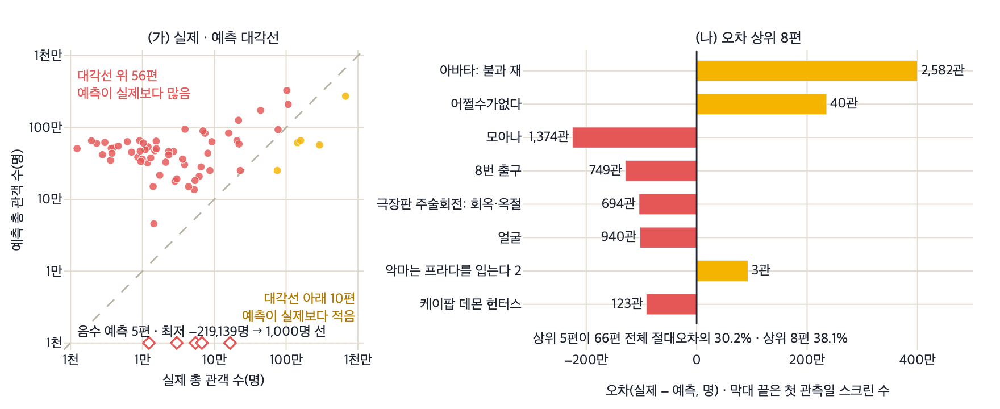
- 대각선 위의 점은 실제보다 많다고 예측한 영화, 아래의 점은 적다고 예측한 영화입니다.
- 66편 가운데 56편이 위쪽에 있습니다.
- 오차가 양쪽으로 고르게 나지 않고 한 방향으로 치우쳐 있습니다.
- 상위 5편이 전체 절대오차의 30.2%를 차지합니다.
- 평균 오차 548,830명은 소수의 영화가 만든 값입니다.
내 앱에서 직접 실험하기 — 프롬프트
실험 프롬프트지금 화면에 있는 산점도를 조금 더 자세히 읽고 싶어. 시험용 66편 가운데 점이 대각선보다 아래에 있는 영화와 위에 있는 영화가 각각 몇 편인지 세어서 그래프 옆에 적어 줘. 예측이 음수로 나온 영화가 몇 편이고 가장 작은 예측값이 몇 명인지도 적어 줘. 그리고 실제 총 관객 수에서 예측값을 뺀 오차를 구해서 절댓값이 큰 여덟 편을 가로 막대그래프로 따로 그려 줘. 0을 가운데 두고 실제가 더 많았던 영화는 오른쪽, 예측이 더 많았던 영화는 왼쪽으로 뻗게 하고 두 방향의 색을 다르게 해 줘. 막대마다 영화 이름과 그 영화의 첫 관측일 스크린 수를 함께 적어 줘. 여덟 편의 절대오차 합이 66편 전체 절대오차 합의 몇 퍼센트인지도 계산해서 적어 줘. 그래프는 plotly로 그려 줘. 학습용과 시험용 나누기는 앞과 똑같이 해 줘.
main.py에 이어 붙일 부분# 기본 변수와 첫 주 관객 수 추가 비교 st.subheader("기본 변수만 vs 첫 주 관객 추가") 결과 = [] for 이름, 변수 in [("기본 변수만", list(기본.values())), ("첫 주 관객 추가", list(기본.values()) + list(추가.values()))]: m = LinearRegression().fit(train[변수], train["total_audi"]) 결과.append({"쓴 변수": 이름, "R²": round(r2_score(test["total_audi"], m.predict(test[변수])), 3)}) st.dataframe(pd.DataFrame(결과), hide_index=True) st.caption("사후 집계값을 사용한 교육용 비교입니다. 실제 개봉 전 예측 성능을 뜻하지 않습니다.")
AI를 활용해 표를 결합하고 모델을 학습하는 코드를 작성합니다. 사용할 자료, 변수, 평가 조건은 우리가 정합니다. 생성된 코드가 요구 사항을 지키는지 확인하고, 점수를 해석하는 일도 필요합니다.
같은 데이터라도 어떤 변수를 넣느냐에 따라 점수가 달라집니다. 점수 하나만 적으면 나중에 무엇으로 얻은 값인지 알 수 없습니다. 공책에 그대로 옮겨 적어 두면 다음 차시에서 같은 질문을 다시 만날 때 도움이 됩니다.
- 학습에 쓴 영화 편수와 점수를 잰 영화 편수
- 내가 고른 변수 조합과 그때 나온 점수
- 변수를 하나 바꿨을 때 점수가 오르는지 내리는지
3. 결과 비교 — 변수 조합과 예측 시점
각 변수 조합을 실행하면 아래 결과를 비교할 수 있습니다. 영화 코드 순으로 정렬한 216편에서 10편마다 앞의 3편을 테스트 자료로 지정했습니다. 학습 150편, 테스트 66편이며 모든 조합에 같은 분할을 사용합니다. 이는 수업 결과를 재현하기 위한 분할로, 미래 개봉작의 예측 성능을 보장하는 검증은 아닙니다.
- 비교 1: 변수를 추가해도 테스트 점수는 낮아질 수 있습니다. 기본 변수 조합에서 R²가 0.31에서 0.24로 낮아졌습니다. 이 결과만으로 흥행 전반의 예측 가능성이나 과대적합을 단정할 수는 없습니다. 학습 점수와 테스트 점수를 함께 살펴보고, 자료 분할을 바꿔도 같은 결과인지 확인해야 합니다.
- 비교 2: 사용할 수 없는 정보가 점수를 높일 수 있습니다. 첫 주 관객 수를 추가하면 R²가 0.90으로 높아집니다. 이 값은 개봉 전에는 알 수 없으므로 개봉 전 성능으로 해석할 수 없습니다. 예측 시점에 알 수 없는 정보를 사용해 평가가 부풀려지는 문제를 데이터 누수라고 합니다.
예측 시점이 달라지면 사용할 수 있는 정보도 달라집니다. 개봉 첫 주의 집계가 끝난 뒤 전체 관객 수를 전망한다면, 그때 확정된 첫 주 관객 수는 사용할 수 있습니다. 다만 예측 시점에 확보한 자료만 사용하고, 새로운 영화에서도 같은 방식으로 평가해야 합니다.
무작위 숫자로 만든 열을 60개까지 더하면 훈련 점수는 0.123에서 0.529로 올라가는 동안 평가 점수는 0.240에서 −2.324로 내려가, 두 선이 갈라지는 모양이 나타납니다.
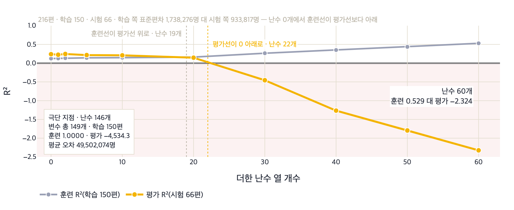
- 회색 훈련선은 뜻 없는 숫자만 넣어도 0.123에서 0.529로 올라갑니다.
- 금색 평가선은 0.240에서 −2.324로 내려가며, 22개 부근에서 0을 지납니다.
- 0 아래는 평균만 답한 것보다 못한 예측입니다.
- 훈련 점수의 상승은 학습이 아니라 학습 자료를 외운 결과입니다.
- 난수 146개에서는 훈련 1.0000, 평가 −4,534.3이 됩니다.
내 앱에서 직접 실험하기 — 프롬프트
아무 뜻 없는 숫자를 변수로 넣으면 점수가 어떻게 되는지 실험해 보고 싶어. 영화마다 무작위 숫자로 채운 새 열을 만들고 그 개수를 0개부터 60개까지 늘려 가며 기본 변수 세 개와 함께 학습시켜 줘. 누가 실행해도 같은 결과가 나오도록 무작위 숫자의 씨앗 값은 0으로 고정하고, 무작위 열은 학습용과 시험용을 나누기 전에 만들어 줘. 개수마다 학습에 쓴 영화로 잰 점수와 시험용 영화로 잰 점수를 둘 다 구해서 가로축을 무작위 열 개수로 둔 꺾은선 두 개로 그려 줘. 점수 0에 가로 기준선을 긋고 0보다 아래인 구간은 배경을 다르게 칠해 줘. 두 선이 처음 교차하는 지점과 평가 점수가 0 아래로 내려가는 지점을 화면에 적어 줘. 학습에 쓴 영화 편수보다 변수가 많아지면 어떻게 되는지도 확인할 수 있게 개수를 더 크게 넣어 보는 칸을 하나 만들어 줘. 그래프는 plotly로 그려 줘. 학습용과 시험용 나누기는 앞과 똑같이 해 줘.
변수가 셋을 넘으면 산점도와 평면을 그릴 수 없으므로, 가로축을 실제값·세로축을 예측값으로 바꾼 네 칸에 모든 모델을 같은 기준으로 세웁니다.
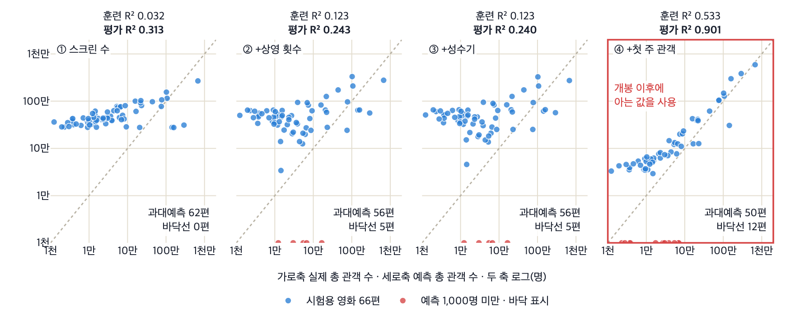
- 변수가 셋을 넘으면 산점도와 평면을 그릴 수 없습니다.
- 대신 실제값과 예측값 두 축으로 모든 모델을 한 기준에 세웁니다.
- 대각선에 가까울수록 예측이 맞은 것입니다.
- 넷째 칸에서만 점이 대각선 주위로 모입니다.
- 넷째 칸의 0.901은 첫 주 관객 수를 넣어 얻은 값이며 개봉 전 예측 성능이 아닙니다.
- 같은 칸에서 12편은 1,000명 미만 예측을 받았습니다.
내 앱에서 직접 실험하기 — 프롬프트
변수를 하나씩 늘려 가며 만든 모델 네 개를 한 화면에서 비교해 줘. 첫째는 스크린 수만, 둘째는 스크린 수와 상영 횟수, 셋째는 거기에 성수기 여부, 넷째는 거기에 첫 주 관객 수까지야. 네 모델 모두 같은 시험용 영화로 예측하고, 실제 총 관객 수를 가로축, 예측한 총 관객 수를 세로축에 둔 산점도를 네 칸으로 나란히 그려 줘. 각 칸에 예측이 실제와 같을 때를 나타내는 대각선을 함께 그려 줘. 관객 수는 편차가 크니 두 축을 로그로 그리고, 예측이 1,000명보다 작게 나온 영화는 바닥에 붙여 표시한 다음 칸마다 몇 편인지 적어 줘. 학습 자료에서 잰 점수와 시험 자료에서 잰 점수를 칸마다 함께 적어 줘. 넷째 칸에는 첫 주 관객 수가 개봉 이후에 알 수 있는 값이라는 안내를 표시해 줘. 그래프는 plotly로 그려 줘. 네 모델 모두 학습용과 시험용 나누기는 앞과 똑같이 해 줘.
총 관객 수와 사실상 같은 열을 변수로 넣으면 평가 R²가 1.0000이 되고, 시험용 66개의 점이 모두 대각선 위에 겹쳐 한 줄처럼 보입니다.
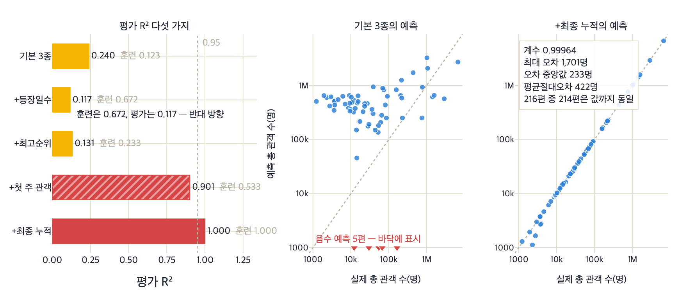
- 적색 막대 1.0000, 산점도 66개 점이 모두 대각선 위에 있습니다.
- 정답과 같은 값을 변수로 넣은 결과입니다.
- 계수 0.99964, 가장 큰 오차 1,701명, 평균 오차 422명입니다.
- 모델이 총 관객 수를 그대로 옮겨 적었습니다.
- 등장일수는 훈련 0.672인데 평가는 0.117입니다.
- 개봉 후 정보라고 점수가 항상 오르지는 않습니다.
내 앱에서 직접 실험하기 — 프롬프트
개봉한 뒤에야 알 수 있는 값을 변수로 넣으면 점수가 어떻게 되는지 확인하고 싶어. 박스오피스 표에서 영화마다 세 가지를 새로 만들어 줘. 영화가 표에 등장한 날 수, 순위 중 가장 높았던 순위, 누적관객 중 가장 큰 값이야. 기본 변수 세 개만 쓴 경우와 여기에 등장한 날 수, 가장 높았던 순위, 첫 주 관객, 누적관객의 최댓값을 각각 하나씩 더한 경우까지 다섯 가지의 시험용 점수와 학습용 점수를 표와 가로 막대그래프로 나란히 보여 줘. 그리고 기본 변수만 쓴 모델과 누적관객 최댓값을 넣은 모델 두 가지에 대해 시험용 영화의 실제 총 관객 수를 가로축, 예측한 총 관객 수를 세로축에 둔 산점도를 나란히 그려 줘. 두 축 모두 로그로 하고 실제와 예측이 같을 때를 나타내는 기준선도 그려 줘. 누적관객 최댓값과 총 관객 수가 완전히 같은 영화가 몇 편인지, 그리고 누적관객 최댓값을 넣은 모델의 가장 큰 오차가 몇 명인지도 화면에 적어 줘. 그래프는 plotly로 그려 줘. 다섯 가지 모두 학습용과 시험용 나누기는 앞과 똑같이 해 줘.
더 알아보기 — 실제 사례
변수를 더한 예측, 그리고 그 예측으로 내린 결정
여러 변수를 조합해 수치를 예측하는 모델은 실제 의사 결정 과정에서 널리 활용됩니다. 그러나 예측 시점에 확보할 수 있는 정보만 변수로 사용해야 한다는 원칙을 지키지 않으면 점수가 부풀려집니다. 다음 두 사례는 이러한 원칙이 실제 현장에서 어떻게 적용되거나 무시되었는지를 보여 줍니다.
| 사례 | 무엇을 예측·분류했나 | 이 차시 개념과의 연결 |
|---|---|---|
| 구글의 영화 흥행 예측 2013 백서 원문 | 구글은 2013년 6월 백서 「Quantifying Movie Magic with Google Search」에서 2012년 개봉작 99편을 분석했다. 개봉 7일 전 검색 질의량 하나만 사용한 단순 회귀가 개봉 주말 흥행 수입 변동의 70%를 설명했다. 검색 광고 클릭 수·상영관 수·시리즈 여부를 더한 다중 회귀는 92%까지 올라갔다. 개봉 4주 전 시점에서도 예고편 검색량·시리즈 여부·계절성 세 변수로 94%를 보고했다. | 변수 하나에서 넷으로 늘렸을 때의 점수 변화는 이 차시 실습에서 변수를 켜고 끄며 점수를 비교하는 활동과 같은 구조다. 구글이 개봉 7일 전 모델과 개봉 4주 전 모델을 따로 만든 것은 예측 시점에 확보한 정보만 변수로 사용할 수 있다는 이 차시의 기준과 이어진다. |
| 질로우의 집값 예측 모델 미국 2021 실적 발표 공시 | 미국 부동산 기업 질로우는 여러 변수로 집값을 예측하는 제스티메이트로 값을 매겨 주택을 직접 사고파는 사업을 운영했다. 2021년 3분기에만 9,680채를 사들였다. 예측한 매각가보다 비싸게 매입한 것으로 확인되어 3억 400만 달러의 재고 평가손실을 기록했다. 2021년 11월 2일 사업 중단과 전체 인력 약 25% 감축을 발표했다. | 과거 자료에서 높은 점수를 얻은 모델도 조건이 달라진 새 자료에서는 같은 성능을 내지 못한다. 이 내용은 5절 '좋은 점수가 좋은 모델인가'와 직접 연결된다. |
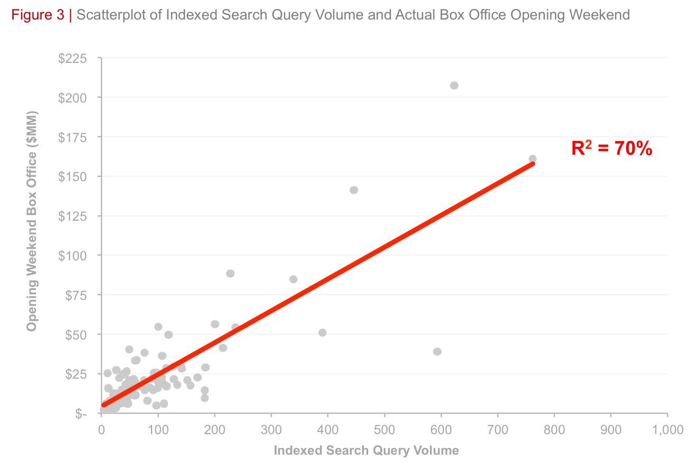
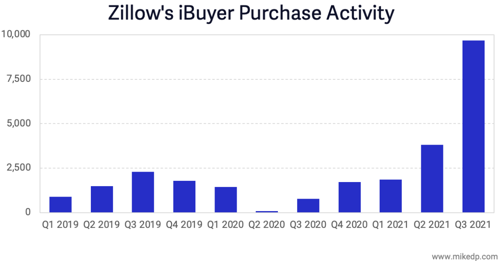
모델의 성능을 판단할 때는 점수의 크기보다 그 점수가 어느 시점의 정보로 나온 값인지를 먼저 확인합니다. 예측 시점에 실제로 확보할 수 있는 정보만으로 구성된 변수인지 검토해야 합니다.
상황으로 보는 다중 회귀 — 사이킷런과 plotly로 직접 확인하기
같은 데이터, 같은 전처리, 같은 학습용·시험용 나누기로 변수와 조건만 바꾸어 계산한 결과입니다. 그래프는 사이킷런으로 계산해 plotly로 그렸고, 각 상황 아래의 프롬프트를 내 앱의 대화창에 붙여 넣으면 같은 그림을 직접 만들 수 있습니다.
다섯 변수로 만들 수 있는 조합 31가지를 모두 계산해 점으로 흩뿌리면, 변수 개수가 같아도 평가 점수가 −0.180에서 0.395까지 벌어진다는 사실이 드러납니다.
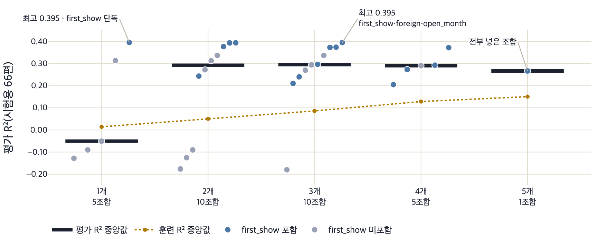
- 같은 개수 안에서도 점의 세로 폭이 큽니다.
- 세 개짜리는 −0.180에서 0.395까지 벌어집니다.
- 파랑(첫 관측일 상영 횟수 포함)이 위쪽, 회색이 아래쪽으로 갈라집니다.
- 개수보다 어떤 변수가 들어 있느냐가 크게 작용합니다.
- 한 개짜리 최고 0.395가 다섯 개를 모두 넣은 조합 0.266보다 높습니다.
내 앱에서 직접 실험하기 — 프롬프트
다섯 변수로 만들 수 있는 조합을 전부 비교해 보고 싶어. 영화 정보 표의 국가에서 한국이 아니면 1인 해외영화 열과 개봉일에서 월만 뽑은 개봉월 열을 새로 만들어 줘. 그다음 첫 관측일 스크린 수, 첫 관측일 상영 횟수, 성수기 개봉, 해외영화 여부, 개봉월 다섯 개 중 하나 이상을 고르는 모든 조합 서른한 가지를 자동으로 만들어서 각각 학습에 쓴 영화로 잰 점수와 시험용 영화로 잰 점수를 구해 줘. 가로축을 변수 개수로 두고 조합 하나를 점 하나로 찍은 그래프를 그려 줘. 점이 겹치지 않게 좌우로 조금씩 흩어 주고, 첫 관측일 상영 횟수가 들어간 조합과 아닌 조합을 다른 색으로 칠해 줘. 개수마다 평가 점수의 중앙값도 가로 막대로 표시해 줘. 평가 점수가 가장 높은 조합 세 개와 가장 낮은 조합 세 개를 변수 이름까지 적어서 표로 보여 줘. 그래프는 plotly로 그려 줘. 서른한 가지 모두 학습용과 시험용 나누기는 앞과 똑같이 해 줘.
4. 도전 — 단서를 하나 만들어 넣으면
이번 도전에서는 예측 시점을 해당 영화의 첫 관측일 집계가 끝난 뒤로 바꿉니다. 첫 관측일은 수업 자료에서 영화가 10위권에 처음 등장한 날입니다. 그날의 관객 수를 상영 횟수로 나누어 상영당 관객 수라는 특성을 만듭니다. 한 번 상영에 평균 몇 명이 관람했는지를 뜻하며, 좌석 수를 고려한 좌석 점유율과는 다릅니다. 이 값은 개봉 전 예측에 사용할 수 없습니다.
이번에는 첫 관측일의 집계가 끝난 시점에서 예측한다고 가정해 줘. 그 시점에 알 수 있는 정보로 새 특성을 만들어 보자. - 박스오피스 표에서 영화마다 10위권에 처음 든 날의 일관객을 상영횟수로 나눠 '상영당 관객 수'라는 새 열을 만들어 줘. 한 번 상영에 몇 명이 들었는지야. - 기본 변수 세 개만 쓴 경우와 거기에 상영당 관객 수를 더한 경우의 R²를 나란히 보여 줘. - 학습용과 시험용 나누기는 앞과 똑같이 해 줘.
선생님이 실행해 확인한 예시 코드
앞 코드 끝에 이어 붙입니다
# 도전 — 단서를 하나 만들어 넣으면 (main.py에 이어 붙일 부분)
st.subheader("도전 — 상영당 관객 수 만들기")
st.caption("예측 시점: 각 영화의 첫 관측일 집계가 끝난 뒤")
daily = pd.read_csv(DAILY, dtype={"영화코드": str})
daily["날짜"] = daily["날짜"].astype(str)
첫날 = daily.sort_values("날짜").groupby("영화코드").first() # 10위권에 처음 든 날
첫날["상영당 관객 수"] = 첫날["일관객"] / 첫날["상영횟수"] # 한 번 상영에 몇 명이 들었나
df2 = df.join(첫날[["상영당 관객 수"]], on="movieCd")
train2, test2 = df2[~is_test], df2[is_test]
비교 = []
for 이름, 변수 in [("기본 변수만", list(기본.values())),
("+ 첫 관측일 상영당 관객 수", list(기본.values()) + ["상영당 관객 수"])]:
m2 = LinearRegression().fit(train2[변수], train2["total_audi"])
비교.append({"쓴 변수": 이름, "R²": round(r2_score(test2["total_audi"], m2.predict(test2[변수])), 3)})
st.dataframe(pd.DataFrame(비교), hide_index=True)| 쓴 변수 | R² |
|---|---|
| 기본 변수 세 가지 | 0.240 |
| + 첫 관측일 상영당 관객 수 | 0.529 |
같은 테스트 자료에서 기본 변수만 사용한 R²는 0.240이고, 첫 관측일의 상영당 관객 수를 추가하면 0.529입니다. 기존 열을 조합해 새 변수를 만드는 것을 특성 만들기라고 합니다. R²가 높아졌다는 결과를 예측 성능이 두 배가 되었다고 해석해서는 안 됩니다. 이번 비교는 첫 관측일 집계 이후라는 시점에서 읽어야 합니다.
예측을 미룰수록 점수가 올라가는 정도를 시점 축 위에서 봅니다. 개봉 전 0.240에서 첫 관측일 하루치만 알아도 0.652, 14일치를 알면 0.847이 됩니다.
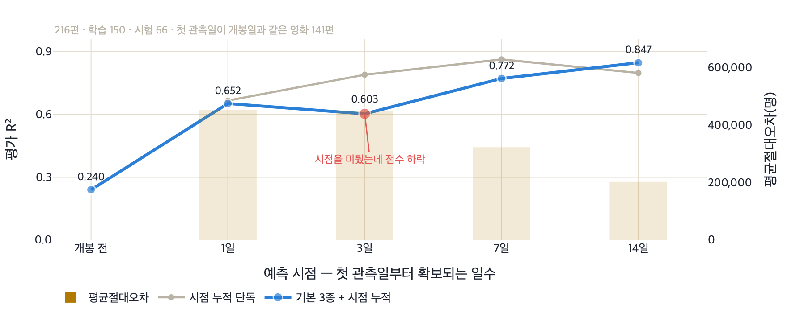
- 개봉 전 0.240에서 첫날 하루치만 더해도 0.652로 올라갑니다.
- 3일 지점에서 0.603으로 내려갔다가 7일 0.772, 14일 0.847로 다시 올라갑니다.
- 시점을 미룬다고 점수가 계속 오르지는 않습니다.
- 같은 216편, 같은 분할이므로 차이의 원인은 예측 시점 하나뿐입니다.
내 앱에서 직접 실험하기 — 프롬프트
예측하는 시점을 바꿔 가며 점수를 비교하고 싶어. 박스오피스 표에서 영화마다 10위권에 처음 등장한 날을 찾고, 그날부터 1일·3일·7일·14일 동안의 일관객을 각각 더해서 네 개의 새 열을 만들어 줘. 자료에 없는 날은 0으로 처리해 줘. 그다음 기본 변수 세 개만 쓴 개봉 전 모델과, 기본 변수에 각 시점의 누적 관객을 하나씩 더한 네 모델까지 다섯 가지의 시험용 점수와 평균 오차를 구해 줘. 가로축을 예측 시점으로 두고 점수를 꺾은선으로 이은 그래프를 그리고 점마다 값을 숫자로 적어 줘. 시점 변수 하나만 쓴 경우의 점수도 옅은 색 선으로 함께 그려 줘. 점수가 앞 시점보다 낮아진 지점이 있으면 그 점만 색을 다르게 표시해 줘. 각 시점에 사용한 정보가 그 시점에 실제로 확보되는 값인지 한 줄로 적어 줘. 그래프는 plotly로 그려 줘. 다섯 가지 모두 학습용과 시험용 나누기는 앞과 똑같이 해 줘.
5. 개념 정리 — 좋은 점수가 좋은 모델인가
다중 선형회귀는 여러 독립 변수로 수치를 예측합니다. 새로운 자료에서의 성능을 확인하려면 학습과 평가 자료를 나누어야 합니다. 변수 조합에 따라 점수가 달라져도, 높은 점수만으로 유용한 모델이라고 판단할 수는 없습니다. 변수의 의미와 정보를 알 수 있는 시점을 확인합니다. 이번 자료의 기본 변수에도 사후 집계값이 있으므로, 결과는 실제 개봉 전 성능을 뜻하지 않습니다.
다음 시간에는 R²를 손으로 계산하며 무엇을 기준으로 비교하는 값인지 살펴봅니다. 오늘 기록한 변수 조합과 점수, 평가 조건을 다음 시간에 함께 사용합니다.
6. 확인 문제
예시 답 펼쳐 보기
기온 예측기는 연도라는 독립 변수 하나로 연평균기온을 예측하는 단순 선형회귀다. 영화 예측기는 스크린 수, 상영 횟수, 성수기 여부 등 여러 독립 변수를 사용하는 다중 선형회귀다. 두 방법 모두 예측하려는 값은 수치다.
🎒 오늘의 체크
- 다중 선형회귀가 무엇인지 독립 변수와 가중치로 설명할 수 있다.
- 변수를 골라 끼우는 총 관객 수 예측 앱을 만들어 실행했다.
- 기본 변수의 의미를 확인하고 점수를 실제 개봉 전 성능으로 해석할 수 없는 이유를 말할 수 있다.
- 첫 주 관객 수를 개봉 전 예측에 사용할 수 없는 이유를 설명할 수 있다.
📚 오늘의 용어
| 용어 | 뜻 |
|---|---|
| 다중 선형 회귀 | 여러 개의 독립 변수로 종속 변수를 예측하는 회귀 분석 |
| 독립 변수 / 종속 변수 | 예측에 사용하는 값 / 예측하려는 값 |
| 가중치 | 다른 변수의 값이 같을 때 해당 변수가 1 증가하면 예측값이 변하는 양입니다. |
| 훈련 데이터 / 테스트 데이터 | 모델을 학습시키는 데이터 / 점수를 매기기 위해 따로 떼어 둔 데이터 |
| 데이터 누수 | 예측 시점에 알 수 없는 정보가 변수로 새어 들어와 점수를 부풀리는 것 |
| 특성 만들기 | 이미 있는 열을 조합해 모델에게 줄 새 단서를 만드는 일. 첫날 관객÷상영횟수로 만든 '상영당 관객 수'가 그 예 |